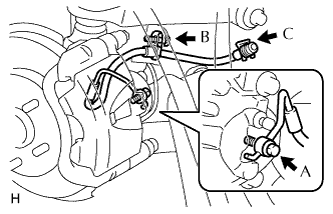

ỐNG MỀM PHANH TRƯỚC > LẮP |
| 1. LẮP ỐNG MỀM PHÍA TRƯỚC |
|  |
Lắp ống mềm với xilanh phanh bằng bu lông nối A và một gioăng mới.
Lắp hãm ống mềm với bu lông có nhãn B và kẹp có nhãn C.
Dùng SST, nối ống phanh vào ồng mềm trong khi giữ ống mềm bằng cờlê.
| 2. ĐỔ DẦU PHANH VÀO BÌNH CHỨA |
 |
| 3. XẢ KHÍ KHỎI XI LANH PHANH CHÍNH |
 |
Dùng SST, tháo 2 đường ống phanh ra khỏi xi lanh phanh chính.
Đạp từ từ bàn đạp phanh và giữ nó ở đó.
 |
Bịt các lỗ bên ngoài bằng ngón tay của bạn và nhả bàn đạp phanh.
Lặp lại các bước 3 hoặc 4 hai lần.
Dùng SST, lắp 2 đường ống phanh vào xi lanh phanh chính.
| 4. XẢ KHÍ ĐƯỜNG ỐNG PHANH |
Tháo nắp nút xả khí.
 |
Lắp ống nhựa vào nút xả khí.
Đạp bàn đạp phanh vài lần và sau đó nới lỏng nút xả khí với bàn đạp phanh đang được nhấn xuống.
Khi dầu ngừng chảy ra, hãy xiết ngay nút xả khí. Sau đó nhả bàn đạp.
Lặp lại 2 bước trên cho đến khi khí trong dầu phanh được xả hết.
Xiết chặt nút xả khí.
Lắp nắp.
Xả khí ra khỏi ống phanh cho từng bánh xe bằng cách lặp lại các quy trình trên.
| 5. XẢ KHÍ ĐƯỜNG ỐNG LI HỢP |
 |
Tháo nắp nút xả khí.
Lắp ống nhựa vào nút xả khí.
Đạp bàn đạp li hợp vài lần và sau đó nới lỏng nút xả khí trong khi đạp bàn đạp xuống.
Tại điểm mà dầu ngừng chảy ra, xiết chặt nút xả và sau đó nhả bàn đạp li hợp.
Lặp lại 2 bước trước đó cho đến khi xả được xả ra khỏi hệ thống.
Xiết chặt nút xả khí.
Lắp nắp nút xả khí.
Kiểm tra rằng tất cả khí đã được xả ra khỏi đường ống li hợp.
| 6. KIỂM TRA MỨC DẦU PHANH TRONG BÌNH CHỨA |
 |
Kiểm tra mức dầu và đổ thêm dầu phanh nếu cần.
| 7. KIỂM TRA RÒ RỈ DẦU PHANH |
| 8. LẮP BÁNH TRƯỚC |